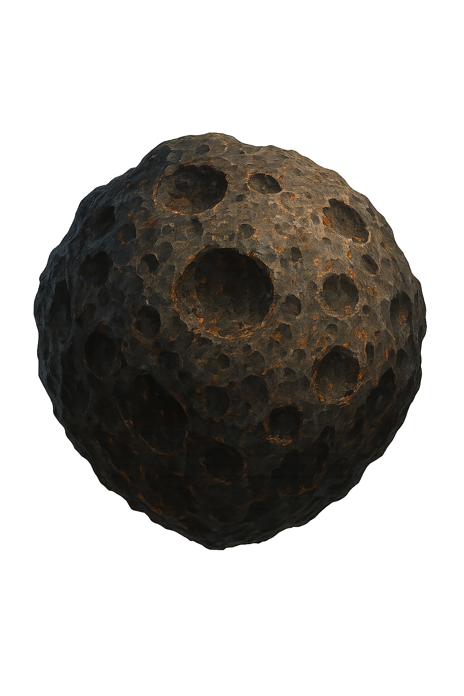
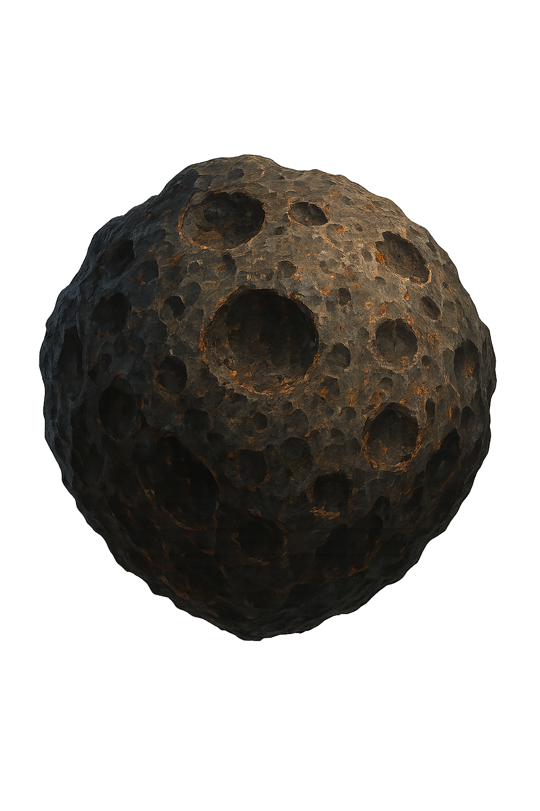

Visor-Technologie

die visoren sind unterteilt in mehrere für spezielle zwecke eingesetzen visoren
Combat Visor

Der combat-Visor ist unser wichtigstes Werkzeug. Der Combat-Visor liefert uns Die standart ansicht, in diesen Hält sich der spieler die meiste zeit auf
Thermal Visor

Diese nützliche Erweiterung für Samus' Visorsystem hat in der Metroid Prime Trilogy nur einen einzigen Auftritt: In Metroid Prime. Streng genommen handelt es sich dabei um Weltraumpiratentechnologie, welche sie in dem geheimen Forschungskomplex ihrer Feinde in der Eiswüste von Phendrana findet und zu ihrem Vorteil benutzt: Mit Hilfe dieses Visors wird die gesamte Umgebung als eine Art Wärmebild angezeigt; je heißer desto heller. Dadurch lassen sich beispielsweise unsichtbare Piraten entdecken und effektiv bekämpfen, bzw. die verwundbaren Teile bei dem riesigen Bossgegner Thardus erkennen und gezielt unter Beschuss nehmen.
X-Ray Visor

Im Gegensatz dazu lässt sich dieses Visor in jedem der Spiele finden und stellt stets die letzte Erweiterung da, welche zu finden ist. Wie der Name bereits andeutet, basiert diese Technologie auf Röntgenstrahlen (engl. "X-Rays") und durchleuchtet die Umgebung derart, dass Samus direkt versteckte Schwachstellen im Körper der Gegner erkennen kann (z.B. bei Omega-Ridley). Auch lassen sich damit Items entdecken, welche hinter einer Wand oder Ähnlichem verborgen sind.
Dark Visor

Der dark visor Dieser Visor existiert nur in Metroid Prime 2: Echoes und zeigt ein graufarbenes Bild der Umgebung, in welchem dunkle Entitäten rot hervorgehoben werden. Es ist der einzige Weg, die Himmelsschlüssel zu finden und damit essentiell um das Spiel zu schaffen.
Echo-Visor

Auch dieses Visor hat seine einzige Erscheinung im zweiten Teil der Trilogie, es basiert auf ausgesendeten Schallwellen, deren Echos aufgefangen und ausgewertet werden, ähnlich wie bei real exsitierenden Fledermäusen. Dies hat zwar den Vorteil, dass nicht sichtbare Dinge sichtbar gemacht werden können, da die Schallwellen ja auch von ihnen abprallen, allerdings ist die Darstellung komplett monochrom und gibt die Umgebung nur teilweise und eher verwischtwieder, weshalb dauerhaftes Spielen mit diesem Visor eher unwahrscheinlich ist.
Command Visor

Abgeschlossen wird die Reihe an Visors durch Dieses aus Metroid Prime 3: Corruption. Es steht Samus von Anfang an zur Verfügung und erlaubt es ihr, auf völlig neue Weise mit ihrem Kampfschiff zu interagieren: Durch Anvisieren von Landezonen kann das Schiff gerufen werden, sodass man speichern- oder den Planeten verlassen kann; sobald die Schiffsmissiles eingebaut worden sind kann es auch feindliche Infanterie, Befestigungsanlagen und kleinre Raumschiffe bombardieren und schließlich sammelt lässt sich in der Himmelsstadt auf Elysia eine Grapple-Erweiterung für das Schiff finden, welche es erlaubt, tonnenschwere Hindernisse oder technische Komponenten von einem Ort zum anderen zu bringen.